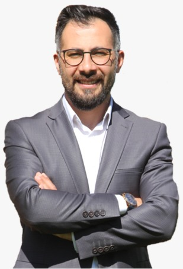

Zihnin sınırlarını tecrübeyle şekillendiriyoruz.
Azerbaycan Cumhurbaşkanlığı'ndan Milli Takımlara uzanan 10 yılı aşkın tecrübe. 9 kitabın yazarı ve binlerce profesyonelin eğitmeni.
ÇALIŞMALARI İNCELEYİN


Azerbaycan Cumhurbaşkanlığı'ndan Milli Takımlara uzanan 10 yılı aşkın tecrübe. 9 kitabın yazarı ve binlerce profesyonelin eğitmeni.
ÇALIŞMALARI İNCELEYİN
Psikoloji lisans ve yüksek lisans eğitimlerini tamamlamış, Eğitim Psikolojisi alanında uzmanlaşmıştır.
Sağlık Bakanlığı ve Azerbaycan Cumhurbaşkanlığı bünyesinde eğitmen olarak görev almıştır.
2022’den bu yana Türkiye Paralimpik Milli Takımlar Yönetim Kurulu Üyesidir.
Kişisel gelişim, duygu yönetimi ve liderlik alanlarında 9 kitabın yazarıdır.